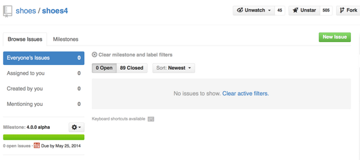

  	<div class="flex-wrap">
      
  	  <article class="tweet  " id="main">
  	    <p class="full_text">
  	      That feeling when a milestone issue list goes empty! @shoooesrb @PragTob @wasnotrice <div class="gallery"><ul><li><a href="../../tweets_media/463986297150140416-BnBpE6FCMAAYFI6.png"></a></li></ul></div>
  	    </p>
  	    <p class="created_at">
  	      5/7/2014, 3:18:48 AM
  	    </p>
  	    <p class="favorite_count">Favs: 4</p>
  	    <p class="retweet_count">Retweets: 2</p>
  	    <a class="permalink" href="../463986297150140416">link</a>
  	  </article>

  	</div>
  </div>
